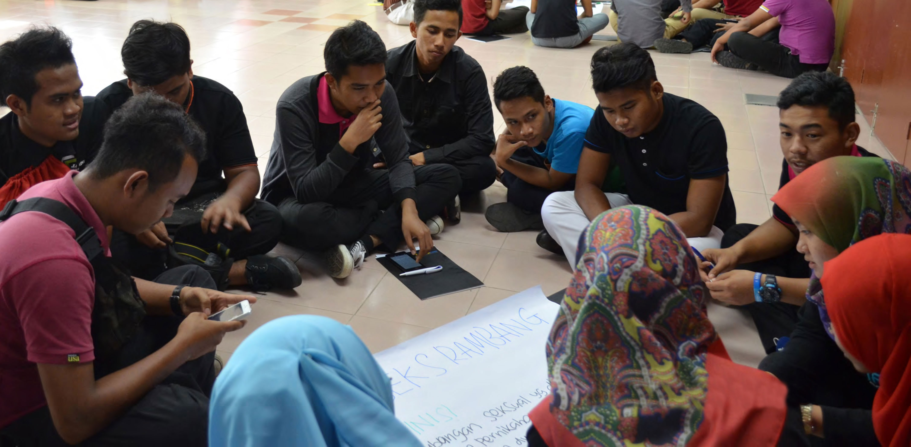

Sexuality is about self- image, developing your own identity, gender roles and about learning to express yourself, your wishes and your boundaries (Rutger International) Sexuality and reproductive health are challenging issues for young people. There are social norms and cultural taboos that suppress adolescent sexuality. We expect our children to “somehow know” these important matters. OrphanCare believes young people need accurate information about sex and sexuality to negotiate sexual relationships fairly, safely and responsibly. To help fight the rise in unintended pregnancies and baby dumping among girls and young women in Malaysia OrphanCare developed a Reproductive Health Awareness Programme that stays within the government’s mantra of ‘abstinence before marriage’. Developed with the Malaysian Department of Welfare and the Women and Family Planning Board the programme helps students and young adults to focus on self-image, be more aware of individual roles within their own families and larger society and the risks and consequences of premarital sexual activity.
